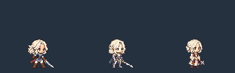
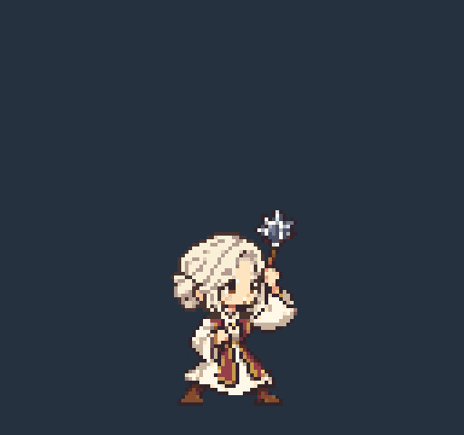
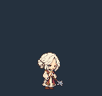
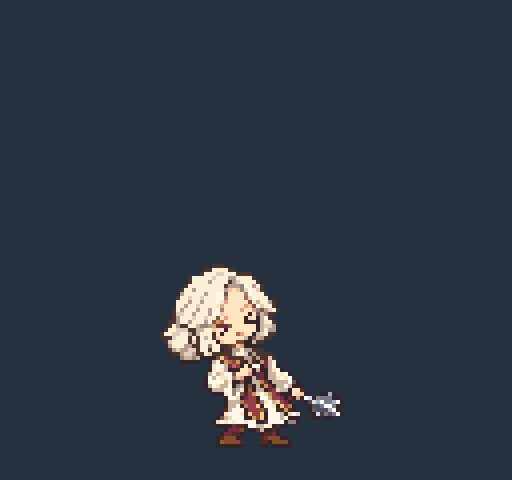
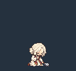
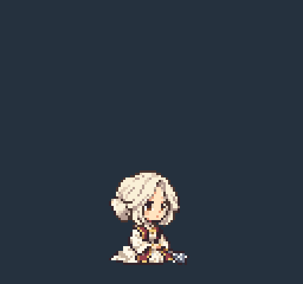
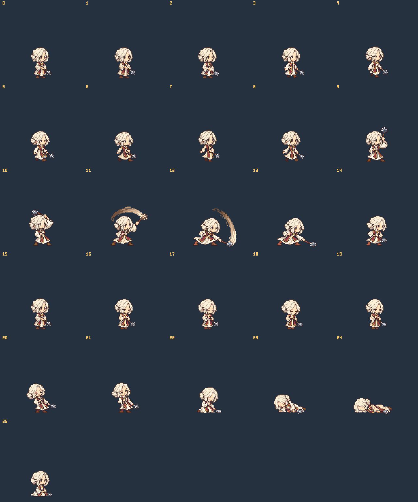

상아색 예복 / 자주색 스톨 / 낮은 묶음머리 / 철퇴 · 2등신 · 대기 48px · 128×120 · 기준점 (64,112)
공격 660ms, hitFrame 3 (0부터 시작), 타격 300–350ms. GIF는 검토용 반복이며 게임용 공격·피격·쓰러짐은 1회 재생입니다.
왼쪽부터 쿠키 r12 · 기사 r15 · 복사. 동일 배율, 동일 발 기준선.






0–2 대기 · 3–8 걷기 · 9–15 공격 · 16–19 시전 · 20–21 피격 · 22–24 쓰러짐 · 25 앉기
